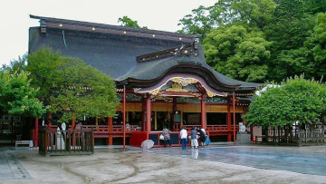
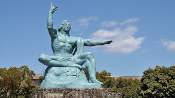
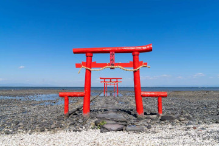
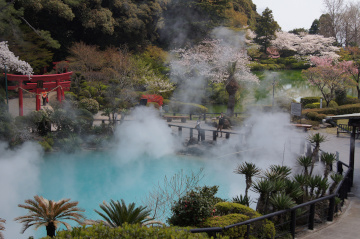
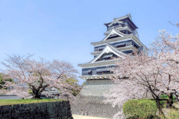

Where to visit?
Fukuoka
Fukuoka Prefecture (福岡県, Fukuoka-ken) is Kyushu's largest and one of Japan's ten most populated cities. Because of its closeness to the Asian mainland (closer to Seoul than to Tokyo), Fukuoka has been an important harbor city for many centuries and was chosen by the Mongol invasion forces as their landing point in the 13th century.
Today's Fukuoka is the product of the fusion of two cities in the year 1889, when the port city of Hakata and the former castle town of Fukuoka were united into one city called Fukuoka. Hakata remains the name of one of Fukuoka's central districts and of the main railway station.
Nagasaki
Nagasaki Prefecture(長崎県, Nagasaki-ken) is an attractively situated port city on the island of Kyushu and the capital of Nagasaki Prefecture.
As one of Japan's closest port cities to the Asian mainland, Nagasaki has played a prominent role in foreign trade relations for many centuries and was the most important of only a very few ports open to restricted numbers of foreign traders during Japan's period of isolation. In more recent history, Nagasaki became the second city after Hiroshima to be destroyed by an atomic bomb towards the end of World War II.
Saga
Saga Prefecture (佐賀県, Saga-ken) is a small prefecture on the island of Kyushu. Located in Kyushu's northwest, Saga offers plenty of natural wonders, history and artistry. It’s famous for being the birthplace of ceramics in Japan, chiefly in the historic pottery towns of Karatsu, Arita and Imari, and has been influenced by Chinese and Korean culture.
Saga Castle and Nagoya Castle hint at Saga’s feudal past. Underwater “floating” torii gate in the Ariake Sea is another attraction. Natural attractions include the sea caves of Karatsu, and Rainbow Pine Grove, a Japanese black pine forest stretching five kilometers from east to west along Karatsu Bay. Hot spring areas include Takeo Onsen and Ureshino Onsen, prime spots for mental and physical relaxation.
Oita
Oita Prefecture (大分県, Ōita-ken) is located on the eastern coast of Kyushu. The prefectural capital is Oita City. Just north of Oita City is Beppu, one of Japan's most famous hot spring resorts.
The most iconic onsen towns are Beppu and Yufuin, which is overflowing with Bohemian charm, and Beppu, home to Japan’s famous eight "bubbling hells." Jutting out to the north of Oita, Kunisaki Peninsula is home to historic spiritual sites nestled against lush mountainsides, while inland and bordering Kumamoto is Kokonoe, a town full of rustic countryside charm and plenty of rare flora and fauna.
Kumamoto
Kumamoto Prefecture(熊本県, Kumamoto-ken) is located in the west of the Kyushu island. Kumamoto is an area with abundant underground water. Its capital kumamoto city is the third biggest city in Kyushu but surrounded by magnificent nature and has a quiet atmosphere.
Kumamoto is also a gourmet city with abundant good-quality food such as fruits, vegetables, beef and seafood thanks to the rich nature. Kumamoto City is located at the center of the Shinkansen (bullet train) route between Fukuoka and Kagoshima, and one can take a car or bus to Aso/Takamori. There is also the ferry to the Nagasaki/Shimabara district, and a cross-express to Oita.